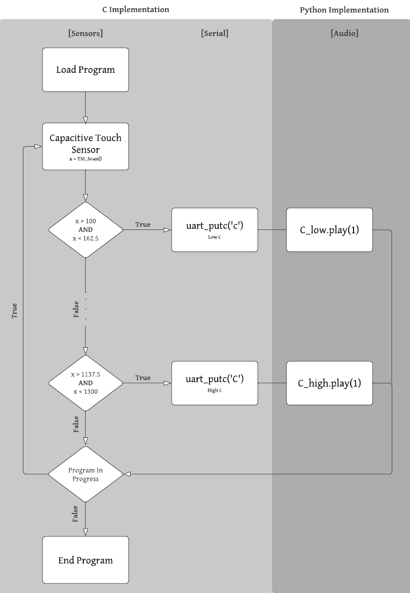

System Overview
System Diagram

System Description
Our target for this project was to replicate a physical harmonica using the various sensors and computing available given the FRDM-KL46Z board. Having worked with the board throughout the semester, we've gained significant experience with its logical design and programming, as well as the on-board LEDs (used for debugging and test purposes). With that understanding, the final project provides the opportunity to explore the board's functionality as well as the other available sensors and devices. Notably, the capacitive touch sensor and the liquid crystal display (LCD). These two applications are of interest to our project due to their functionality. Such that the LCD acts as an external display while the slider utilizes the properties of capacitive sensing. When your finger applies a specific pressure to different points along the board's sensor, the difference in capacitance correlates with decreased spacing between the plates such that the relative location can be determined. The LCD can then be programmed to trigger alongside the finger's positioning and display any required values based on the 7-segment display encoding. Our digital harmonica will then read in the finger's position on the touch sensor corresponding to notes from that of a low C to that of a high C (spanning Low C, D, E, F, G, A, B, High C) where the notes played will be displayed provided the LCD in real time.
To configure the slider, LCD, and the audio, several systems needed to be connected through the MCUXpresso IDE. The respective software/driver systems need to be integrated into the main file system to run each of these components, and their set-up scripts must also be written alongside the main control script. The necessary slider configuration is minimal in its set-up script, with only initialization and scan functionality required. However, the required support for the LCD was more complex in the required drivers and setting configurations.
Finally to display the audio of our system to play the notes we desire, we hand off the necessary action to our implementation on Python. Such that using the serial port and UART functions, we are able to obtain the input of the FRDM-KL46Z board by relying on the C implementation on MCUXpresso. To ensure that we are not overloading our system in the constant transmission of data, we require a delay between each scan. In the process of setting up the serial implementation, we additionally realized that there was a pin conflict between the UART functions and the LCD functions such that to have both work in unison, we may have to reassign pins. Since this appeared to be preset within the device, we decided that it would be best to instead focus our attention elsewhere and have the Python terminal display the same function. Once we obtained the necessary inputs, we then made use of the PyGame library to play the specific note based on the provided inputs. Once the initial implementation is completed, the rest of our time was focused on refining and polishing our final result.
Resources
Capacitive Touch Sensor
NXP Documentation and Example Projects From RIT
Liquid Crystal Display
Provided As Public Course Resource
Serial
Provided As Public Course Resource
Audio
PyGame Library
Website
HTML5UP Template